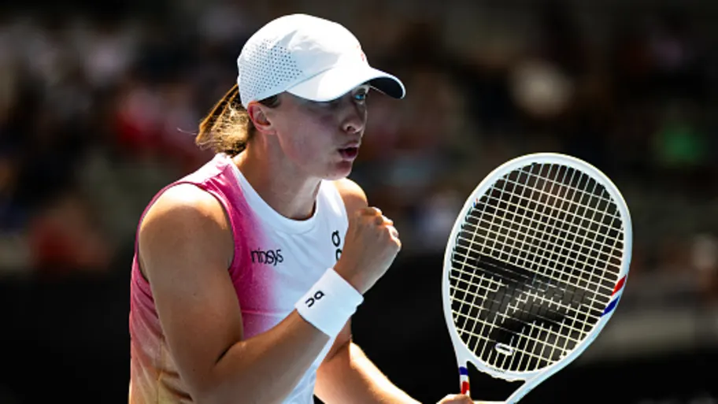

Номер 2 - Ига Швьонтек
Ига Швьонтек е една от най-големите тенис звезди в света и безспорен лидер в съвременния женски тенис. Родена на 31 май 2001 г. в Варшава,
Полша, тя впечатлява със своето техническо майсторство, физическа издръжливост и умение да доминира на корта. Ига започва да играе тенис
на 6-годишна възраст и бързо изгражда успешна кариера. Тя става световно призната през 2020 г., когато спечели Ролан Гарос на едва 19 години,
като първата полска тенисистка, спечелила турнир от Големия шлем. Ига Швьонтек е известна със своята силна и стабилна игра от основната линия,
невероятна скорост и контрол върху топката.